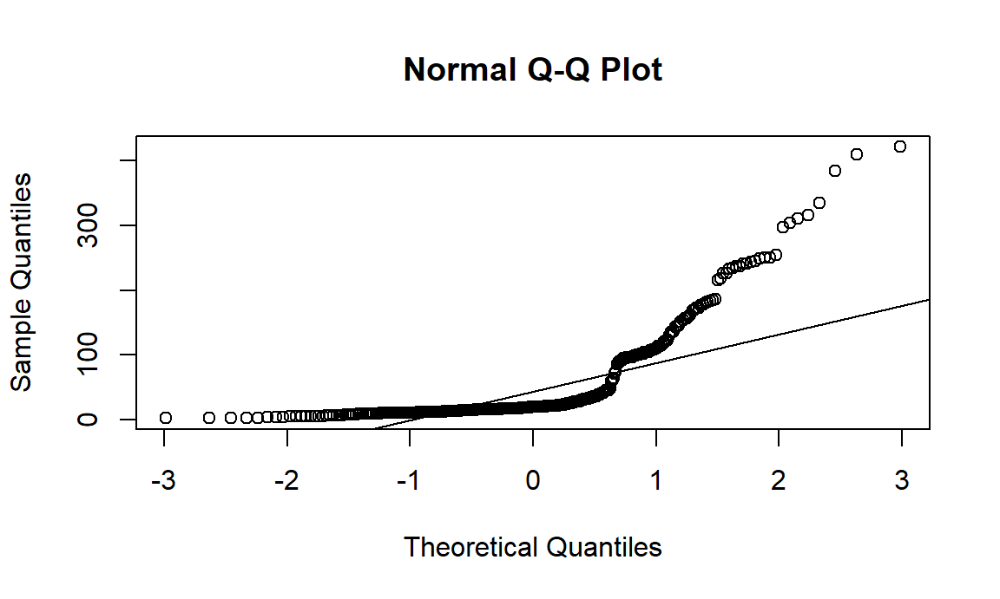

Summary Statistics
| Death Rate by Sex | |||||||||
|---|---|---|---|---|---|---|---|---|---|
| Sex | N | Minimum | Maximum | Median | Interquartile Range | Mean | Standard Deviation | Standard Error | ci |
| F | 354 | 2.4 | 491.4 | 17.4 | 46.900 | 51.4 | 78.0 | 4.1 | 8.2 |
| M | 354 | 2.8 | 421.0 | 20.0 | 59.625 | 55.5 | 75.0 | 4.0 | 7.8 |
Distribution
Assumptions
| Shapiro-Wilks Normality Test | ||
|---|---|---|
| Death Rates by Sex | ||
| Sex | Statistic | P-value |
| Female | 0.628 | 0.000 |
| Male | 0.660 | 0.000 |

Description
From the boxplot visualization and the p-values (< 0.05) associated with the The Shapiro–Wilks test, there is evidence that the data from both the sex groups is not normally distributed. This is also evident from the qqplot above.
Since the normality assumption has been violated, the Wilcoxon rank sum test (non-parametric) will be performed.
Test
| Wilcoxon Rank-Sum Test | ||||||
|---|---|---|---|---|---|---|
| Group 1 | Group 2 | N (Females) | N (Males) | Statistic | P-value | P-value Significance |
| Female | Male | 554 | 540 | 53875 | 0.00125 | ** |
p-value = 0.00125 < 0.05
Report
The respective median death rates for male and female groups are as follows: 20 and 17.45. Based on the Wilcoxon rank sum test result, we have evidence to state that there is a statistically significant difference in death rates between men and women in New York City (p = 0.00125).
| Summary Statistics | ||||
|---|---|---|---|---|
| by Race/Ethnicity | ||||
| Race/Ethnicity | Mean | Standard Deviation | Median | Interquartile Range |
| Asian/PI | 27.31356 | 32.50134 | 11.4 | 36.300 |
| Black | 65.94663 | 74.79932 | 26.1 | 107.375 |
| Hispanic | 35.85876 | 38.89141 | 16.0 | 71.400 |
| Other | NA | NA | NA | NA |
| Unknown | NA | NA | NA | NA |
| White | 84.74261 | 115.18831 | 24.6 | 116.200 |
Description
Since the “Other” and “Unknown” categories of race don’t have any associated death rates, these categories have been filtered out.
Distribution
One-way ANOVA Test
| One-way ANOVA Test by Race/Ethnicity | ||||||
|---|---|---|---|---|---|---|
| Effect | DF - Numerator | DF - Denominator | F-Statistic | P-value | p < 0.05 | Generalized ETA Squared |
| race_ethnicity | 3 | 704 | 23.428 | 0.000 | * | 0.091 |
Description
p-value = 1.83e-14 < 0.05
At 0.05 significance level, we reject the null hypothesis and conclude that there is a significant difference in death rates across different ethnicity , in New York City.
Multiple Comparisons
A Tukey pairwise-comparisons test is performed to account for multiple comparisons.
Tukey multiple comparisons of means
95% family-wise confidence level
Fit: aov(formula = death_rate ~ race_ethnicity, data = anova_df)
$race_ethnicity
diff lwr upr p adj
Black-Asian/PI 38.633070 18.644324 58.62182 0.0000048
Hispanic-Asian/PI 8.545198 -11.471682 28.56208 0.6900543
White-Asian/PI 57.429054 37.383762 77.47435 0.0000000
Hispanic-Black -30.087872 -50.076618 -10.09913 0.0006691
White-Black 18.795984 -1.221215 38.81318 0.0746105
White-Hispanic 48.883857 28.838564 68.92915 0.0000000 Description
From the above table, it can be inferred that there was a significant difference in death rates for the following pairs: Black and Asian/PI, White-Asian/PI, Hispanic-Black, White-Hispanic.
Assumptions
| Homogeneity of Variances | |||
|---|---|---|---|
| by Race/Ethnicity | |||
| DF1 | DF2 | Statistic | P-value |
| 3 | 704 | 18.619 | 0.000 |
Description
Levene’s test was performed to check for the homogeneity of variances assumption. Based on the p-value, it can be inferred that there is no homogeneity of variances in different ethnicity .
Normality
Shapiro-Wilk normality test
data: mod_residuals
W = 0.7833, p-value < 2.2e-16 Description
Since the p-value < 0.00000000000000022, it can be assumed that the residuals are not normally distributed. Therefore, a Kruskal-Wallis rank sum test will be performed because the assumptions of one-way ANOVA have been violated.
Kruskal-Wallis rank sum test
Kruskal-Wallis rank sum test
data: death_rate by race_ethnicity
Kruskal-Wallis chi-squared = 117.22, df = 3, p-value < 2.2e-16Report
Based on the Kruskal-Wallis rank sum test result, we have evidence to state that there is a statistically significant difference in death rates across different race/ethnicity in New York City (p-value < 0.05).
Summary statistics
| Summary Statistics | ||||
|---|---|---|---|---|
| by Leading Cause of Deaths and Sex | ||||
| Sex | N | Mean | Standard Deviation | Median |
| Chronic Lower Respiratory Diseases | ||||
| Female | 45 | NA | NA | NA |
| Male | 43 | NA | NA | NA |
| Diseases of Heart | ||||
| Female | 48 | 1640.667 | 1992.524 | 846.0 |
| Male | 48 | 1433.312 | 1633.663 | 877.5 |
| Malignant Neoplasms | ||||
| Female | 48 | 1122.438 | 1181.971 | 735.5 |
| Male | 48 | 1093.542 | 1120.950 | 835.0 |
Description
Distribution
Two-way ANOVA test
Anova Table (Type III tests)
Response: deaths
Sum Sq Df F value Pr(>F)
(Intercept) 2791001 1 1.6904 0.1947
leading_cause 82720630 2 25.0507 1.077e-10 ***
sex 553642 1 0.3353 0.5630
Residuals 439182875 266
---
Signif. codes: 0 '***' 0.001 '**' 0.01 '*' 0.05 '.' 0.1 ' ' 1
Two-way ANOVA test with interaction effect:
Anova Table (Type III tests)
Response: deaths
Sum Sq Df F value Pr(>F)
(Intercept) 1302849 1 0.7841 0.3767
leading_cause 47177320 2 14.1960 1.394e-06 ***
sex 10052 1 0.0060 0.9381
leading_cause:sex 508347 2 0.1530 0.8582
Residuals 438674528 264
---
Signif. codes: 0 '***' 0.001 '**' 0.01 '*' 0.05 '.' 0.1 ' ' 1 Description
At 0.05 significance level, the following inferences can be made based on the p-values given above:
Assumptions
| Homogeneity of Variances | |||
|---|---|---|---|
| by Race/Ethnicity | |||
| DF1 | DF2 | Statistic | P-value |
| 5 | 264 | 14.534 | 0.000 |
Description
Normality
Shapiro-Wilk normality test
data: mod_residuals_2
W = 0.85107, p-value = 1.976e-15 Description
Since the p-value < 0.05, it can be assumed that the residuals are not normally distributed. Therefore, a Aligned Rank Transformed ANOVA will be performed because the assumptions of two-way ANOVA have been violated.
Aligned Rank Transformed ANOVA for Two-way
Analysis of Variance of Aligned Rank Transformed Data
Table Type: Anova Table (Type III tests)
Model: No Repeated Measures (lm)
Response: art(deaths)
Df Df.res F value Pr(>F)
1 leading_cause 2 264 24.405426 1.8816e-10 ***
2 sex 1 264 0.249360 0.61794
3 leading_cause:sex 2 264 0.050777 0.95050
---
Signif. codes: 0 '***' 0.001 '**' 0.01 '*' 0.05 '.' 0.1 ' ' 1 Report
Based on the Aligned Rank Transformed ANOVA for two-way procedure result, there is evidence to state that the leading causes of deaths (Diseases of Heart, Malignant Neoplasms, Diabetes Mellitus and Chronic Lower Respiratory Diseases) is the only factor associated with significant death counts in the New York City (p < 0.05).
| Summary Statistics | ||||
|---|---|---|---|---|
| by Leading Cause of Deaths and Race/Ethnicity | ||||
| Race/Ethnicity | N | Mean | Standard Deviation | Median |
| Diseases of Heart | ||||
| Asian/PI | 16 | 469.3 | 53.7 | 459.0 |
| Black | 16 | 2,201.4 | 275.7 | 2,157.5 |
| Hispanic | 16 | 1,316.4 | 67.0 | 1,321.5 |
| Other | 16 | 46.1 | 12.1 | 41.5 |
| Unknown | 16 | 91.2 | 25.2 | 93.0 |
| White | 16 | 5,097.5 | 961.9 | 4,867.5 |
| Malignant Neoplasms | ||||
| Asian/PI | 16 | 495.4 | 89.4 | 487.5 |
| Black | 16 | 1,680.4 | 150.4 | 1,663.5 |
| Hispanic | 16 | 1,097.6 | 59.0 | 1,111.0 |
| Other | 16 | 32.4 | 12.9 | 32.5 |
| Unknown | 16 | 49.9 | 23.1 | 46.5 |
| White | 16 | 3,292.2 | 118.0 | 3,301.0 |
Distribution
Two-way ANOVA test
Df Sum Sq Mean Sq F value Pr(>F)
race_ethnicity 5 402119267 80423853 416.9 < 2e-16 ***
leading_cause 1 8833968 8833968 45.8 1.68e-10 ***
Residuals 185 35684365 192888
---
Signif. codes: 0 '***' 0.001 '**' 0.01 '*' 0.05 '.' 0.1 ' ' 1
Two-way ANOVA test with interaction effect:
Df Sum Sq Mean Sq F value Pr(>F)
race_ethnicity 5 402119267 80423853 912.08 <2e-16 ***
leading_cause 1 8833968 8833968 100.19 <2e-16 ***
race_ethnicity:leading_cause 5 19812666 3962533 44.94 <2e-16 ***
Residuals 180 15871699 88176
---
Signif. codes: 0 '***' 0.001 '**' 0.01 '*' 0.05 '.' 0.1 ' ' 1 Description
At 0.05 significance level, the following inferences can be made based on the p-values given above:
Assumptions
| Homogeneity of Variances | |||
|---|---|---|---|
| by Race/Ethnicity | |||
| DF1 | DF2 | Statistic | P-value |
| 11 | 180 | 20.577 | 0.000 |
Description
Levene’s test was performed to check for the homogeneity of variances assumption. Based on the p-value, it can be inferred that there is no homogeneity of variances in the observed groups.
Normality
Shapiro-Wilk normality test
data: mod_residuals_4
W = 0.60017, p-value < 2.2e-16 Description
Since the p-value < 0.00000000000000022, it can be assumed that the residuals are not normally distributed. Therefore, a Aligned Rank Transformed ANOVA will be performed because the assumptions of two-way ANOVA have been violated.
Aligned Rank Transformed ANOVA for Two-way
Analysis of Variance of Aligned Rank Transformed Data
Table Type: Anova Table (Type III tests)
Model: No Repeated Measures (lm)
Response: art(deaths)
Df Df.res F value Pr(>F)
1 race_ethnicity 5 180 900.297 < 2.22e-16 ***
2 leading_cause 1 180 233.836 < 2.22e-16 ***
3 race_ethnicity:leading_cause 5 180 76.828 < 2.22e-16 ***
---
Signif. codes: 0 '***' 0.001 '**' 0.01 '*' 0.05 '.' 0.1 ' ' 1 Report
Based on the Aligned Rank Transformed ANOVA for two-way procedure result, there is evidence to state that all the factor (race_ethnicity, leading_cause and interaction term) are associated with significant death counts in the New York City (p < 0.000000000000000222). Therefore, it is safe to state that there are significant differences in the top 2 leading causes of death across different ethnicity in NYC.